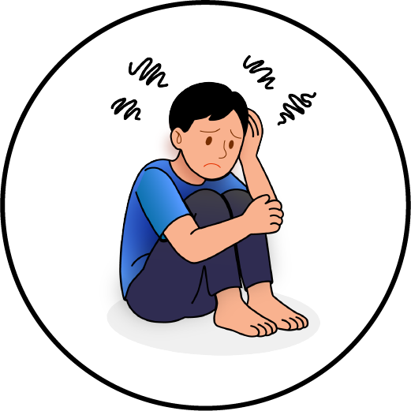

merasa cemas atau kesepian
Kehidupan kelihatan baik-baik aja, tapi di dalam hati sering muncul rasa gelisah dan kesepian, bahkan ketika ada banyak orang disekitar kamu. Kesepian ini sering muncul karena koneksi emosional antara kamu dengan orang sekitar belum kuat.
Bagaimana Menghadapinya?
Kalau kamu sering merasa cemas atau kesepian, coba mulai dari hal kecil seperti membuka diri ke orang atau lingkungan yang kamu percaya. Kamu nggak harus langsung cerita semuanya. Cukup mulai dari hal ringan dulu hingga obrolan mengalir sendiri. Selain itu, kamu juga bisa cari aktivitas yang bikin kamu merasa terhubung, misalnya ikut komunitas atau aktivitas sosial dengan temanmu, ngobrol santai, atau sekadar quality time dengan diri sendiri. Pelan-pelan aja, yang penting kamu tetap kasih ruang untuk diri kamu merasa didengar dan dipahami.
“Akhir-akhir ini aku sering ngerasa sendiri walaupun lagi sama teman-teman. Aku coba mulai cerita sedikit ke teman yang aku percaya, dan ternyata itu bikin aku lebih lega dan engga kesepian lagi. Aku juga coba ikut kegiatan komunitas biar punya lingkungan baru.”
Bangun hubungan yang bermakna itu butuh waktu, keberanian, dan kejujuran pada diri sendiri